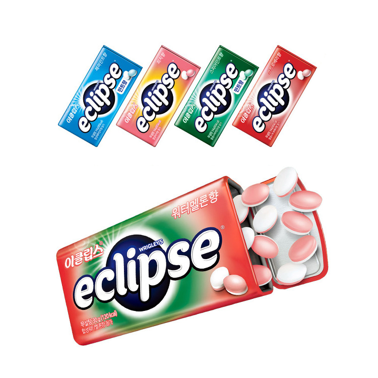
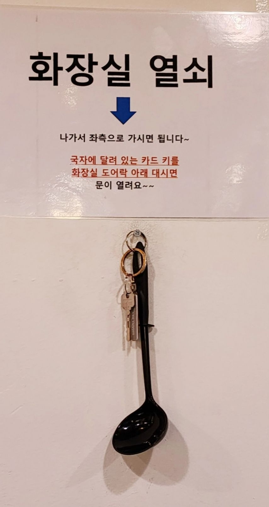

박유빈을 소개합니다
What I Dislike
이제 제가 싫어하는 것들에 대해서 소개하겠습니다.
1. 입냄새
입냄새 좋아하는 사람은 없겠지만 저는 후각이 몹시 예민한
편입니다. 남 뿐만 아니라 제 자신한테도 냄새나는걸 싫어해요. 그래서
학교에서도 밥먹고 꼭 양치합니다. 이클립스는 선택 아닌 필수.


2. 화장실 밖에 있는 식당
별별거 다달려있는거 들고 화장실 가는거 너무 수치스러워요. 휴지까지 뜯어가야되면 감점 -99999999.

3. 어디냐고 물어봤는데 '버스' 라고 답장하는 사람
버슨데... 그래서 그 버스가 어디있냐고...
이렇게 답장하면 전 앞으로 대한민국에 있다고 답장하겠습니다.